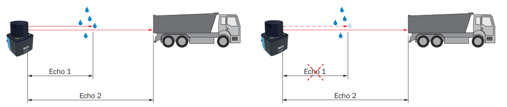

Filter Details¶
This page describes the individual filters used by picoScan sensors.
- Fog filter
- Echo filter
- Particle filter
- Moving average filter
- Filters for data reduction and the region of interest filter
Interval Filter¶
The interval filter reduces the scan output rate by a configurable reduction factor. For example, a factor of three outputs only every third scan, reducing the output rate to one third.
Fog Filter¶
The fog filter removes unwanted echoes at close range (approximately 3 m). This reduces false activations in fog.
Echo Filter¶
The echo filter suppresses measurement data caused by edge hits, rain, dust, snow, and other ambient conditions. Configure the sensor to output the first echo, the last echo, or all three echoes. Pulses attributed to undesirable ambient conditions are not output.

Example of retaining or suppressing an echo caused by ambient conditions.
Particle Filter¶
The particle filter suppresses small, irrelevant reflection pulses caused by dust, raindrops, snowflakes, and similar particles. It continuously compares successive scans to detect static objects. If a measured value differs from its temporal and spatial neighbors by more than the configured threshold, it is discarded and replaced by the last valid value.
Moving Average Filter¶
The moving average filter smooths distance values by calculating the arithmetic
mean over several scans of the same point. Configure an averaging depth of two
to four scans. The first value is output only after the configured number of
scans; invalid distance values (0) are excluded from the average.
Example of a four-scan moving average for representative angular positions (distance values in mm):
| Scan/output | Angle 3 | Angle 4 | Angle 5 | Angle 6 | Angle 7 | Angle 8 |
|---|---|---|---|---|---|---|
| Scan 1 | 1100 | 1100 | 1150 | 1150 | 1380 | 1380 |
| Scan 2 | 1200 | 1200 | 1190 | 950 | 1500 | 1500 |
| Scan 3 | 1150 | 1450 | 1200 | 1200 | 1450 | 1450 |
| Scan 4 | 1170 | 1170 | 1220 | 1220 | 1470 | 1150 |
| 1. Output (scans 1–4) | 1155 | 1230 | 1190 | 1130 | 1450 | 1370 |
| Scan 5 | 0 | 1110 | 1150 | 1150 | 1380 | 1380 |
| 2. Output (scans 2–5) | 1173 | 1233 | 1190 | 1130 | 1450 | 1370 |
| Scan 6 | 1200 | 1210 | 1190 | 0 | 1500 | 1500 |
| 3. Output (scans 3–6) | 1173 | 1235 | 1190 | 1190 | 1450 | 1370 |
| Scan 7 | 730 | 1150 | 0 | 1200 | 1450 | 1450 |
| 4. Output (scans 4–7) | 1173 | 1163 | 1190 | 1190 | 1450 | 1370 |
Individual outliers influence the average. After activation, the first value is
output only after the configured number of scans. Invalid distance values (0)
are excluded from the calculation, so fewer scans contribute at those
positions.
Rectangular Filter¶
After the measurement filters, data-reduction settings and the region of interest filter limit the points passed on for further processing.
When the rectangular filter is active, only scan parts within the rectangle are retained. The filter does not reduce the data; points outside the rectangle are set to zero. Adjust the rectangle by setting the minimum and maximum X and Y values in millimeters.
Distance Filter¶
The distance filter limits the measured radial distance and therefore affects a circular area around the product. It does not reduce the data; points outside the selected radial range are set to zero. To keep a circular area, set the maximum range to the required radius in millimeters. To keep a ring, set the maximum range to the required radius and the minimum range to a value greater than 0 mm.